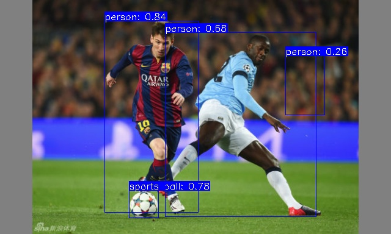

中文
中文典型应用
更新历史
| 日期 | 版本 | 作者 | 更新内容 |
|---|---|---|---|
| 2023-09-12 | v1.2 | ztd |
|
| 2023-07-20 | v1.1 | ztd |
|
| 2023-05-08 | v1.0 | wonder |
|
llama.cpp
llama 是 META 开源的大语言模型，llama.cpp 是 ggerganov 开源的纯 cpp 运行的 llama 推理项目。
感谢 llama.cpp 这个优秀的项目，我们可以在 LicheePi 4A 上运行 LLM。
笔者在早些时候稍微修改了 llama.cpp https://github.com/Zepan/llama.cpp，使其可以在更小内存（低至 700MB 左右）运行 7B 模型。
可以看到 TH1520 花费约 6s 计算一个 token（未使用 V 扩展加速，V 扩展加速预计可加速 4～8 倍，如果你加入了 V 扩展支持，欢迎投稿！）

同时还简单测试了下在入门级 C906 内核上运行7B模型的可行性，由于 D1 的内存过小，使用了 mmap 方式只读扩展，所以引入了大量低速 IO 操作，使得运行速度大为降低，最后仅 18s/token

YOLOX 目标检测
本教程是一个如何在 LPi4A（LicheePi 4A） 开发板平台上部署 YOLOX 模型完成目标检测的示例（CPU推理）。
教程中包括了：
- 在 LPi4A 开发版上安装 Python 环境
- 使用 YOLOX 项目中的源码执行模型
教程遵循通常的模型部署流程：
- LPi4A 上的基础 Python 环境配置
- 获取 yolox 源码和模型
- 安装 yolox 所依赖的 python 包
- LPi4A 上的使用 HHB-onnxruntime 执行示例
基础 Python 环境配置
基本软硬件配置
参考 LPi4A 的 《开箱体验》中的描述，正确安装好开发板，上电启动后以 root 权限进入。
确保已联网的状态下，更新 apt 源
sudo apt update
安装一些软件，用于示例中后续使用
sudo apt install wget git vim
安装 SHL 库
wget https://github.com/T-head-Semi/csi-nn2/releases/download/v2.4-beta.1/c920.tar.gz
tar xf c920.tar.gz
cp c920/lib/* /usr/lib/riscv64-linux-gnu/ -rf
Python 环境配置
LPi4A 烧录的系统中已默认安装 python 3.11 版本。可以使用如下命令确认
python --version
后续均以 python3.11 版本为例，其他版本在安装依赖时需要修改到对应版本的命令。
各种 python 程序软件依赖的软件包大多可通过 pip 安装，可以使用如下命令安装 pip
apt install python3-pip
安装其他python包之前，先安装 venv 包，用于创建python虚拟环境
apt install python3.11-venv
创建 python虚拟环境，并激活
cd /root
python3 -m venv ort
source /root/ort/bin/activate
至此，基本 python 环境已经创建完成，与其他体系结构类似，可以直接通过 pip install 安装纯 python 包。
opencv 安装是会依赖其他 python 包，如果 pip 不能自动下载，则可以先手动安装依赖项的安装包。如何获取安装包可以参考 下载 riscv whl。
获取 YOLOX 模型
YOLOX 是一个类 YOLO 的目标检测模型，有相当优异的性能表现。
可以直接下载 github 上的源码和模型
git clone https://github.com/Megvii-BaseDetection/YOLOX.git
cd YOLOX/demo/ONNXRuntime
wget https://github.com/Megvii-BaseDetection/YOLOX/releases/download/0.1.1rc0/yolox_s.onnx
修改源码
本教程将使用 HHB-onnxruntime 执行模型，因此切换到。在源码中的 onnxruntime 示例目录，修改文件 demo/ONNXRuntime/onnx_inference.py 的开头新增两行代码
#!/usr/bin/env python3
# Copyright (c) Megvii, Inc. and its affiliates.
+import sys
+sys.path.insert(0, "../../")
+
import argparse
import os
代码中使用 sys.path.insert 指定搜索路径，以此免去从源码中安装 YOLOX 的安装包的操作。
安装依赖包
RISC-V 体系结构的 python 生态还有欠缺，未来完善之后，YOLOX 中依赖的包可以通过 requirements.txt 文件直接安装。
本教程中的 YOLOX 示例依赖了较多的 python 包，下载预编译好的 python 包
git clone -b python3.11 https://github.com/zhangwm-pt/prebuilt_whl.git
cd prebuilt_whl
可以按照以下顺序，手工处理。
pip install numpy-1.25.0-cp311-cp311-linux_riscv64.whl
pip install opencv_python-4.5.4+4cd224d-cp311-cp311-linux_riscv64.whl
pip install kiwisolver-1.4.4-cp311-cp311-linux_riscv64.whl
pip install Pillow-9.5.0-cp311-cp311-linux_riscv64.whl
pip install matplotlib-3.7.2.dev0+gb3bd929cf0.d20230630-cp311-cp311-linux_riscv64.whl
pip install pycocotools-2.0.6-cp311-cp311-linux_riscv64.whl
pip3 install loguru-0.7.0-py3-none-any.whl
pip3 install torch-2.0.0a0+gitc263bd4-cp311-cp311-linux_riscv64.whl
pip3 install MarkupSafe-2.1.3-cp311-cp311-linux_riscv64.whl
pip3 install torchvision-0.15.1a0-cp311-cp311-linux_riscv64.whl
pip3 install psutil-5.9.5-cp311-abi3-linux_riscv64.whl
pip3 install tqdm-4.65.0-py3-none-any.whl
pip3 install tabulate-0.9.0-py3-none-any.whl
安装过程中会涉及到其他纯 python 依赖包，pip 会自动从官方源下载。
安装 HHB-onnxruntime
HHB-onnxuruntime 是移植了 SHL 后端（execution providers），让 onnxruntime 能复用到 SHL 中针对玄铁 CPU 的高性能优化代码。
wget https://github.com/zhangwm-pt/onnxruntime/releases/download/riscv_whl/onnxruntime-1.14.1-cp311-cp311-linux_riscv64.whl
pip install onnxruntime-1.14.1-cp311-cp311-linux_riscv64.whl
执行
在示例目录中执行 onnx_inference.py 示例
python3 onnx_inference.py -m yolox_s.onnx -i soccer.jpg -o outdir -s 0.3 --input_shape 640,640
python3 onnx_inference.py -m yolox_s.onnx -i soccer.jpg -o outdir -s 0.3 --input_shape640,640
参数说明：
- -m：指定模型
- -i：指定图片
- -o：指定输出目录
- -s：指定检测的阈值
- --input_shape：指定检测时使用的图片尺寸
参考结果
本教程中输入如下图，是运动员踢足球的图片，预期的检测结果是检测到两个人和一个足球。
图片来源于网络
示例正常执行后，会在 outdir 目录下生成结果图片 soccer.jpg。图片中会用框画出检测到的目标，并标注概率，效果如下图：

MobilenetV2
本教程是一个如何在 LicheePi4A 平台上部署 mobilenetv2 模型完成图像分类的示例。
教程中包括了：
- 使用 HHB 编译 onnx 模型为 LicheePi4A 上可用的二进制
- 在 LicheePi4A 上使用 opencv c++ 版本做 mobilenetv2 模型的预处理
- 在 LicheePi4A 上使用 CPU 和 NPU 的差异
NPU
环境配置
参考外设使用文档搭建好 NPU 使用相关环境后，进入到 HHB 环境的 Docker 镜像中。
首先获取本节教程的模型，下载到示例目录 /home/example/th1520_npu/onnx_mobilenetv2_c++ 下：
mobilenetv2-12.onnx
并获取本次教程所使用的优化版本 opencv 所需的库文件，前往 github仓库下载下载到上一级目录 /home/example/th1520_npu/ 下。
cd /home/example/th1520_npu/
git clone https://github.com/zhangwm-pt/prebuilt_opencv.git
编译
HHB 编译模型：
将 ONNX 模型交叉编译成 NPU 上可执行的程序，需要使用 hhb 命令。注意，NPU 上仅支持8位或者16位定点运算，本示例中指定为 int8 非对称量化。编译时需要先进入到示例所在目录 /home/example/th1520_npu/onnx_mobilenetv2_c++：
cd /home/example/th1520_npu/onnx_mobilenetv2_c++
hhb -D --model-file mobilenetv2-12.onnx --data-scale 0.017 --data-mean "124 117 104" --board th1520 --postprocess save_and_top5 --input-name "input" --output-name "output" --input-shape "1 3 224 224" --calibrate-dataset persian_cat.jpg --quantization-scheme "int8_asym"
选项说明：
- -D ：指定 HHB 流程执行到生成可执行文件的阶段为止
- --model-file ：指定当前目录中已经下载好的 mobilenet 模型
- --data-mean ：指定均值
- --data-scale ：指定缩放值
- --board ：指定目标平台为 th1520
- --input-name： 模型的输入名
- --output-name：模型的输出名
- --input-shape：模型的输入大小
- --postprocess：保存输出结果，并且打印 top5 结果
- --calibrate-dataset：指定量化时所需的校准图片
- --quantization-scheme：指定量化方式为 int8 非对称
命令执行完成后，会在当前目录生成 hhb_out 子目录，里面的包括了 hhb_runtime，model.c 等多个文件：
- hhb.bm：HHB 的模型文件，包括了量化后的权重数据等信息
- hhb_runtime：th1520 平台上的可执行文件，由目录中的c文件编译而成
- main.c：临时文件，示例程序的参考入口
- model.c：临时文件，模型结构文件，与模型结构相关
- model.params：临时文件，权重数值
- io.c：临时文件，读写文件的辅助函数
- io.h：临时文件，读写文件的辅助函数声明
- process.c：临时文件，图像预处理函数
- process.h：临时文件，图像预处理函数声明
更详细的 HHB 选项说明可以参考 HHB用户手册中的命令行选项说明。
g++编译示例：
riscv64-unknown-linux-gnu-g++ main.cpp -I../prebuilt_opencv/include/opencv4 -L../prebuilt_opencv/lib -lopencv_imgproc -lopencv_imgcodecs -L../prebuilt_opencv/lib/opencv4/3rdparty/ -llibjpeg-turbo -llibwebp -llibpng -llibtiff -llibopenjp2 -lopencv_core -ldl -lpthread -lrt -lzlib -lcsi_cv -latomic -static -o mobilenetv2_example
编译命令正确执行完成后会在示例目录生成 mobilenetv2_example 文件。
执行
交叉编译完成后，即可将程序执行所需的文件复制到开发板的目录中。可以使用 scp 命令：
scp -r ../onnx_mobilenetv2_c++ sipeed@你的开发板ip:~
先确认开发板中驱动是否加载：
lsmod
若在输出中有 img_mem，vha 和 vha_info 这三个模块，NPU驱动即加载成功。
参考 YOLOX章节 安装并配置好 python 虚拟环境：
sudo apt update
sudo apt install wget git vim
wget https://github.com/T-head-Semi/csi-nn2/releases/download/v2.4-beta.1/c920.tar.gz
tar xf c920.tar.gz
cp c920/lib/* /usr/lib/riscv64-linux-gnu/ -rf
sudo apt install python3-pip
sudo apt install python3.11-venv
cd /root
python3 -m venv ort
source /root/ort/bin/activate
git clone -b python3.11 https://github.com/zhangwm-pt/prebuilt_whl.git
cd prebuilt_whl
pip install numpy-1.25.0-cp311-cp311-linux_riscv64.whl
pip install opencv_python-4.5.4+4cd224d-cp311-cp311-linux_riscv64.whl
pip install kiwisolver-1.4.4-cp311-cp311-linux_riscv64.whl
pip install Pillow-9.5.0-cp311-cp311-linux_riscv64.whl
pip install matplotlib-3.7.2.dev0+gb3bd929cf0.d20230630-cp311-cp311-linux_riscv64.whl
pip install pycocotools-2.0.6-cp311-cp311-linux_riscv64.whl
pip3 install loguru-0.7.0-py3-none-any.whl
pip3 install torch-2.0.0a0+gitc263bd4-cp311-cp311-linux_riscv64.whl
pip3 install MarkupSafe-2.1.3-cp311-cp311-linux_riscv64.whl
pip3 install torchvision-0.15.1a0-cp311-cp311-linux_riscv64.whl
pip3 install psutil-5.9.5-cp311-abi3-linux_riscv64.whl
pip3 install tqdm-4.65.0-py3-none-any.whl
pip3 install tabulate-0.9.0-py3-none-any.whl
在开发板相应目录下运行刚刚编译好的示例：
./mobilenetv2_example
执行完成后，会在终端上提示执行到的各个阶段：
- 预处理
- 模型执行
- 后处理
mobilenetv2_example 执行会使用到的文件：
- persian_cat.jpg：输入图片
- input_img.bin：预处理阶段，根据输入图片生成的中间结果
- hhb_out/hhb_runtime：模型执行阶段使用的文件，由x86主机上 HHB 生成
- hhb_out/hhb.bm：模型执行阶段使用的文件，由x86主机上 HHB 生成
- input_img.bin_output0_1_1000.txt：模型执行阶段的输出文件，包括了模型执行输出的 1000 个结果数值
参考结果
(ort) root@lpi4a:/home/sipeed/onnx_mobilenetv2_c++# ./mobilenetv2_example
********** preprocess image **********
********** run mobilenetv2 **********
INFO: NNA clock:792000 [kHz]
INFO: Heap :ocm (0x18)
INFO: Heap :anonymous (0x2)
INFO: Heap :dmabuf (0x2)
INFO: Heap :unified (0x5)
Run graph execution time: 7.87149ms, FPS=127.04
=== tensor info ===
shape: 1 3 224 224
data pointer: 0x857ca0
=== tensor info ===
shape: 1 1000
data pointer: 0x3fc9abe000
The max_value of output: 16.053827
The min_value of output: -8.026914
The mean_value of output: -0.001889
The std_value of output: 9.203342
============ top5: ===========
283: 16.053827
281: 14.165141
287: 11.709850
285: 11.615416
282: 11.332113
********** postprocess result **********
********** probability top5: **********
n02123394 Persian cat
n02123045 tabby, tabby cat
n02127052 lynx, catamount
n02124075 Egyptian cat
n02123159 tiger cat
CPU
将上述 NPU 步骤中的 HHB 编译命令替换为：
hhb -D --model-file mobilenetv2-12.onnx --data-scale 0.017 --data-mean "124 117 104" --board c920 --postprocess save_and_top5 --input-name "input" --output-name "output" --input-shape "1 3 224 224"
g++ 编译后处理命令替换为：
riscv64-unknown-linux-gnu-g++ main.cpp -I../prebuilt_opencv/include/opencv4 -L../prebuilt_opencv/lib -lopencv_imgproc -lopencv_imgcodecs -L../prebuilt_opencv/lib/opencv4/3rdparty/ -llibjpeg-turbo -llibwebp -llibpng -llibtiff -llibopenjp2 -lopencv_core -ldl -lpthread -lrt -lzlib -lcsi_cv -latomic -static -o mobilenetv2_example
再将编译的到的二进制文件发送到开发板上运行即可。参考结果如下：
(ort) root@lpi4a:/home/sipeed/onnx_mobilenetv2_c++# ./mobilenetv2_example
********** preprocess image **********
********** run mobilenetv2 **********
Run graph execution time: 79.77252ms, FPS=12.54
=== tensor info ===
shape: 1 3 224 224
data pointer: 0x259240
=== tensor info ===
shape: 1 1000
data pointer: 0x1c5200
The max_value of output: 16.843750
The min_value of output: -7.414062
The mean_value of output: 0.001131
The std_value of output: 9.056762
============ top5: ===========
283: 16.843750
281: 13.789062
287: 12.257812
282: 10.898438
285: 10.765625
********** postprocess result **********
********** probability top5: **********
n02123394 Persian cat
n02123045 tabby, tabby cat
n02127052 lynx, catamount
n02123159 tiger cat
n02124075 Egyptian cat
Yolov5n
NPU
环境配置
参考外设使用文档搭建好 NPU 使用相关环境后，进入到 HHB 环境的 Docker 镜像中。
首先获取本节教程的模型，下载到示例目录 /home/example/th1520_npu/yolov5n 下：
git clone https://github.com/ultralytics/yolov5.git
cd yolov5
pip3 install ultralytics
python3 export.py --weights yolov5n.pt --include onnx --imgsz 384 640
编译
HHB 编译模型：
将 ONNX 模型交叉编译成 NPU 上可执行的程序，需要使用 hhb 命令。注意，NPU 上仅支持8位或者16位定点运算，本示例中指定为 int8 非对称量化。编译时需要先进入到示例所在目录 /home/example/th1520_npu/yolov5n：
cd /home/example/th1520_npu/yolov5n
hhb -D --model-file yolov5n.onnx --data-scale-div 255 --board th1520 --input-name "images" --output-name "/model.24/m.0/Conv_output_0;/model.24/m.1/Conv_output_0;/model.24/m.2/Conv_output_0" --input-shape "1 3 384 640" --calibrate-dataset kite.jpg --quantization-scheme "int8_asym"
选项说明：
- -D ：指定 HHB 流程执行到生成可执行文件的阶段为止
- --model-file ：指定当前目录中已经下载好的 yolov5 模型
- --data-mean ：指定均值
- --data-scale ：指定缩放值
- --board ：指定目标平台为 th1520
- --input-name： 模型的输入名
- --output-name：模型的输出名
- --input-shape：模型的输入大小
- --postprocess：保存输出结果，并且打印 top5 结果
- --calibrate-dataset：指定量化时所需的校准图片
- --quantization-scheme：指定量化方式为 int8 非对称
命令执行完成后，会在当前目录生成 hhb_out 子目录，里面的包括了 hhb_runtime，model.c 等多个文件：
- hhb.bm：HHB 的模型文件，包括了量化后的权重数据等信息
- hhb_runtime：th1520 平台上的可执行文件，由目录中的c文件编译而成
- main.c：临时文件，示例程序的参考入口
- model.c：临时文件，模型结构文件，与模型结构相关
- model.params：临时文件，权重数值
- io.c：临时文件，读写文件的辅助函数
- io.h：临时文件，读写文件的辅助函数声明
- process.c：临时文件，图像预处理函数
- process.h：临时文件，图像预处理函数声明
更详细的 HHB 选项说明可以参考 HHB用户手册中的命令行选项说明。
g++编译示例：
riscv64-unknown-linux-gnu-gcc yolov5n.c -o yolov5n_example hhb_out/io.c hhb_out/model.c -Wl,--gc-sections -O2 -g -mabi=lp64d -I hhb_out/ -L /usr/local/lib/python3.8/dist-packages/hhb/install_nn2/th1520/lib/ -lshl -L /usr/local/lib/python3.8/dist-packages/hhb/prebuilt/decode/install/lib/rv -L /usr/local/lib/python3.8/dist-packages/hhb/prebuilt/runtime/riscv_linux -lprebuilt_runtime -ljpeg -lpng -lz -lstdc++ -lm -I /usr/local/lib/python3.8/dist-packages/hhb/install_nn2/th1520/include/ -mabi=lp64d -march=rv64gcv0p7_zfh_xtheadc -Wl,-unresolved-symbols=ignore-in-shared-libs
编译命令正确执行完成后会在示例目录生成 yolov5n_example 文件。
执行
交叉编译完成后，即可将程序执行所需的文件复制到开发板的目录中。可以使用 scp 命令：
scp -r ../yolov5n sipeed@你的开发板ip:~
先确认开发板中驱动是否加载：
lsmod
若在输出中有 img_mem，vha 和 vha_info 这三个模块，NPU驱动即加载成功。
参考 YOLOX章节 安装并配置好 python 虚拟环境：
sudo apt update
sudo apt install wget git vim
wget https://github.com/T-head-Semi/csi-nn2/releases/download/v2.4-beta.1/c920.tar.gz
tar xf c920.tar.gz
cp c920/lib/* /usr/lib/riscv64-linux-gnu/ -rf
sudo apt install python3-pip
sudo apt install python3.11-venv
cd /root
python3 -m venv ort
source /root/ort/bin/activate
git clone -b python3.11 https://github.com/zhangwm-pt/prebuilt_whl.git
cd prebuilt_whl
pip install numpy-1.25.0-cp311-cp311-linux_riscv64.whl
pip install opencv_python-4.5.4+4cd224d-cp311-cp311-linux_riscv64.whl
pip install kiwisolver-1.4.4-cp311-cp311-linux_riscv64.whl
pip install Pillow-9.5.0-cp311-cp311-linux_riscv64.whl
pip install matplotlib-3.7.2.dev0+gb3bd929cf0.d20230630-cp311-cp311-linux_riscv64.whl
pip install pycocotools-2.0.6-cp311-cp311-linux_riscv64.whl
pip3 install loguru-0.7.0-py3-none-any.whl
pip3 install torch-2.0.0a0+gitc263bd4-cp311-cp311-linux_riscv64.whl
pip3 install MarkupSafe-2.1.3-cp311-cp311-linux_riscv64.whl
pip3 install torchvision-0.15.1a0-cp311-cp311-linux_riscv64.whl
pip3 install psutil-5.9.5-cp311-abi3-linux_riscv64.whl
pip3 install tqdm-4.65.0-py3-none-any.whl
pip3 install tabulate-0.9.0-py3-none-any.whl
在开发板相应目录下运行刚刚编译好的示例：
python3 inference.py
执行完成后，会在终端上提示执行到的各个阶段：
- 预处理：将原图填充缩放到 384 * 640 的大小
- 模型执行和后处理：执行模型推理，并做 nms 等后处理
- 画框：将检测结果画在 384 *640 尺寸的图上，并输出新图片
inference.py 执行会使用到的文件：
- kite.jpg：输入图片
- image_preprocessed.bin：预处理阶段，根据输入图片生成的中间结果
- yolov5n_example：模型执行阶段使用的文件，由x86主机上 gcc 编译生成
- hhb_out/hhb.bm：模型执行阶段使用的文件，由x86主机上 HHB 生成
- detect.txt：后处理阶段的输出文件，包括了图片中检测出来的 4 个目标
- kite_result.jpg：输出图片，将检测框加入到输入图上的结果
参考结果
(ort) root@lpi4a:/home/sipeed/yolov5n_npu# python3 inference.py
********** preprocess image **********
******* run yolov5 and postprocess *******
INFO: NNA clock:792000 [kHz]
INFO: Heap :ocm (0x18)
INFO: Heap :anonymous (0x2)
INFO: Heap :dmabuf (0x2)
INFO: Heap :unified (0x5)
Run graph execution time: 5.36258ms, FPS=186.48
detect num: 4
id: label score x1 y1 x2 y2
[0]: 0 0.895277 273.492188 161.245056 359.559814 330.644257
[1]: 0 0.887368 79.860062 179.181244 190.755692 354.304474
[2]: 0 0.815214 222.054550 224.477600 279.828979 333.717285
[3]: 33 0.563324 67.625580 173.948883 201.687988 219.065765
********** draw bbox **********
[273.492188, 161.245056, 359.559814, 330.644257, 0.895277, 0]
[79.860062, 179.181244, 190.755692, 354.304474, 0.887368, 0]
[222.05455, 224.4776, 279.828979, 333.717285, 0.815214, 0]
[67.62558, 173.948883, 201.687988, 219.065765, 0.563324, 33]
示例图片来源于网络。

CPU
将上述 NPU 步骤中的 HHB 编译命令替换为：
hhb -D --model-file yolov5n.onnx --data-scale-div 255 --board c920 --input-name "images" --output-name "/model.24/m.0/Conv_output_0;/model.24/m.1/Conv_output_0;/model.24/m.2/Conv_output_0" --input-shape "1 3 384 640"
gcc 编译后处理命令替换为：
riscv64-unknown-linux-gnu-gcc yolov5n.c -static -o yolov5n_example hhb_out/io.c hhb_out/model.c -Wl,--gc-sections -O2 -g -mabi=lp64d -I hhb_out/ -L /usr/local/lib/python3.8/dist-packages/hhb/install_nn2/c920/lib/ -lshl -static -L /usr/local/lib/python3.8/dist-packages/hhb/prebuilt/decode/install/lib/rv -L /usr/local/lib/python3.8/dist-packages/hhb/prebuilt/runtime/riscv_linux -lprebuilt_runtime -ljpeg -lpng -lz -lstdc++ -lm -I /usr/local/lib/python3.8/dist-packages/hhb/install_nn2/c920/include/ -mabi=lp64d -march=rv64gcv0p7_zfh_xtheadc
再将编译的到的二进制文件发送到开发板上运行即可。参考结果如下：
(ort) root@lpi4a:/home/sipeed/yolov5n_cpu# python3 inference.py
********** preprocess image **********
******* run yolov5 and postprocess *******
Run graph execution time: 387.34067ms, FPS=2.58
detect num: 4
id: label score x1 y1 x2 y2
[0]: 0 0.901887 274.524475 158.559036 359.169312 332.431702
[1]: 0 0.879545 80.073883 184.767792 190.130157 349.906281
[2]: 0 0.845192 219.378418 221.662415 283.860413 333.798584
[3]: 33 0.666908 67.099136 174.128189 202.971451 220.213608
********** draw bbox **********
[274.524475, 158.559036, 359.169312, 332.431702, 0.901887, 0]
[80.073883, 184.767792, 190.130157, 349.906281, 0.879545, 0]
[219.378418, 221.662415, 283.860413, 333.798584, 0.845192, 0]
[67.099136, 174.128189, 202.971451, 220.213608, 0.666908, 33]
Yolov5s
参考 yolov5n 的编译步骤，只需将 yolov5n.onnx 文件替换为 yolov5s.onnx，并将 HHB 和 GCC 编译命令中的参数 yolov5n.onnx 更改为 yolov5s.onnx 即可。
环境配置
在 x86 主机中，参考外设使用文档搭建好 NPU 使用相关环境后，进入到 HHB 环境的 Docker 镜像中。
在 1520 上，参考 YOLOX章节 安装并配置好 python 虚拟环境。
CPU
编译过程
HBB 编译
hhb -D --model-file yolov5s.onnx --data-scale-div 255 --board c920 --input-name "images" --output-name "/model.24/m.0/Conv_output_0;/model.24/m.1/Conv_output_0;/model.24/m.2/Conv_output_0" --input-shape "1 3 384 640"
HHB 命令中截取到最后的卷积层为止，卷积层之后的后处理，由 yolov5s.c 文件处理。yolov5s.c 可以参考 yolov5n 示例下的 yolov5n.c 文件。
GCC 编译
riscv64-unknown-linux-gnu-gcc yolov5s.c -static -o yolov5s_example hhb_out/io.c hhb_out/model.c -Wl,--gc-sections -O2 -g -mabi=lp64d -I hhb_out/ -L /usr/local/lib/python3.8/dist-packages/hhb/install_nn2/c920/lib/ -lshl -static -L /usr/local/lib/python3.8/dist-packages/hhb/prebuilt/decode/install/lib/rv -L /usr/local/lib/python3.8/dist-packages/hhb/prebuilt/runtime/riscv_linux -lprebuilt_runtime -ljpeg -lpng -lz -lstdc++ -lm -I /usr/local/lib/python3.8/dist-packages/hhb/install_nn2/c920/include/ -mabi=lp64d -march=rv64gcv0p7_zfh_xtheadc
参考结果
(ort) root@lpi4a:/home/sipeed/yolov5s# python3 inference.py
********** preprocess image **********
******* run yolov5 and postprocess *******
Run graph execution time: 821.20135ms, FPS=1.22
detect num: 4
id: label score x1 y1 x2 y2
[0]: 0 0.932165 275.538910 159.163147 359.211151 329.072205
[1]: 0 0.888989 219.883255 222.074265 285.310486 334.005676
[2]: 0 0.840487 85.319901 184.137268 186.844284 346.103210
[3]: 33 0.783095 70.033737 176.102921 202.740250 218.405075
********** draw bbox **********
[275.53891, 159.163147, 359.211151, 329.072205, 0.932165, 0]
[219.883255, 222.074265, 285.310486, 334.005676, 0.888989, 0]
[85.319901, 184.137268, 186.844284, 346.10321, 0.840487, 0]
[70.033737, 176.102921, 202.74025, 218.405075, 0.783095, 33]
NPU
编译过程
参考 yolov5n 即可。
HHB 编译
hhb -D --model-file yolov5s.onnx --data-scale-div 255 --board th1520 --input-name "images" --output-name "/model.24/m.0/Conv_output_0;/model.24/m.1/Conv_output_0;/model.24/m.2/Conv_output_0" --input-shape "1 3 384 640" --calibrate-dataset kite.jpg --quantization-scheme "int8_asym"
GCC 编译
HHB 命令中截取到最后的卷积层为止，卷积层之后的后处理，由 yolov5s.c 文件处理。yolov5s.c 可以参考 yolov5n 示例下的 yolov5n.c 文件。
riscv64-unknown-linux-gnu-gcc yolov5s.c -o yolov5s_example hhb_out/io.c hhb_out/model.c -Wl,--gc-sections -O2 -g -mabi=lp64d -I hhb_out/ -L /usr/local/lib/python3.8/dist-packages/hhb/install_nn2/th1520/lib/ -lshl -L /usr/local/lib/python3.8/dist-packages/hhb/prebuilt/decode/install/lib/rv -L /usr/local/lib/python3.8/dist-packages/hhb/prebuilt/runtime/riscv_linux -lprebuilt_runtime -ljpeg -lpng -lz -lstdc++ -lm -I /usr/local/lib/python3.8/dist-packages/hhb/install_nn2/th1520/include/ -mabi=lp64d -march=rv64gcv0p7_zfh_xtheadc -Wl,-unresolved-symbols=ignore-in-shared-libs
参考结果
(ort) root@lpi4a:/home/sipeed/yolov5s_npu# python3 inference.py
********** preprocess image **********
******* run yolov5 and postprocess *******
INFO: NNA clock:792000 [kHz]
INFO: Heap :ocm (0x18)
INFO: Heap :anonymous (0x2)
INFO: Heap :dmabuf (0x2)
INFO: Heap :unified (0x5)
Run graph execution time: 9.85487ms, FPS=101.47
detect num: 4
id: label score x1 y1 x2 y2
[0]: 0 0.933075 276.321838 157.925751 358.274475 329.757538
[1]: 0 0.893568 219.203781 221.895264 286.790039 334.801636
[2]: 0 0.848185 83.283234 182.688538 187.325684 346.702515
[3]: 33 0.800765 68.743454 175.539230 204.108292 218.260056
********** draw bbox **********
[276.321838, 157.925751, 358.274475, 329.757538, 0.933075, 0]
[219.203781, 221.895264, 286.790039, 334.801636, 0.893568, 0]
[83.283234, 182.688538, 187.325684, 346.702515, 0.848185, 0]
[68.743454, 175.53923, 204.108292, 218.260056, 0.800765, 33]
BERT
CPU
环境配置
参考外设使用文档搭建好 NPU 使用相关环境后，进入到 HHB 环境的 Docker 镜像中。
首先获取模型，本教程中使用的模型来自 google bert 仓库，已转换成 onnx 版本的 BERT 模型，可以用如下命令下载到 /home/example/c920/bert_small 目录下:
cd home/example/c920/bert_small
wget https://github.com/zhangwm-pt/bert/releases/download/onnx/bert_small_int32_input.onnx
编译
HHB 编译模型：
将 ONNX 模型交叉编译成 NPU 上可执行的程序，需要使用 hhb 命令。注意，NPU 上仅支持8位或者16位定点运算，本示例中指定为 int8 非对称量化。编译时需要先进入到示例所在目录 /home/example/c920/bert_small：
cd /home/example/c920/bert_small
hhb --model-file bert_small_int32_input.onnx --input-name "input_ids;input_mask;segment_ids" --input-shape '1 384;1 384;1 384' --output-name "output_start_logits;output_end_logits" --board c920 --quantization-scheme "float16" --postprocess save_and_top5 -D --without-preprocess
选项说明：
- -D ：指定 HHB 流程执行到生成可执行文件的阶段为止
- --model-file ：指定当前目录中已经下载好的 bert 模型
- --data-mean ：指定均值
- --data-scale ：指定缩放值
- --board ：指定目标平台为 th1520
- --input-name： 模型的输入名
- --output-name：模型的输出名
- --input-shape：模型的输入大小
- --postprocess：保存输出结果，并且打印 top5 结果
- --calibrate-dataset：指定量化时所需的校准图片
- --quantization-scheme：指定量化方式为 int8 非对称
命令执行完成后，会在当前目录生成 hhb_out 子目录，里面的包括了 hhb_runtime，model.c 等多个文件：
- hhb.bm：HHB 的模型文件，包括了量化后的权重数据等信息
- hhb_runtime：th1520 平台上的可执行文件，由目录中的c文件编译而成
- main.c：临时文件，示例程序的参考入口
- model.c：临时文件，模型结构文件，与模型结构相关
- model.params：临时文件，权重数值
- io.c：临时文件，读写文件的辅助函数
- io.h：临时文件，读写文件的辅助函数声明
- process.c：临时文件，图像预处理函数
- process.h：临时文件，图像预处理函数声明
更详细的 HHB 选项说明可以参考 HHB用户手册 中的命令行选项说明。
编译命令正确执行完成后会在示例目录生成可执行文件，将该示例目录拷贝至开发板中即可运行。
scp -r ../bert_small sipeed@你的ip:~
执行
执行示例程序的前置步骤同 YOLOv5n，此处不在赘述。
前置步骤准确无误后，即可在示例目录执行命令
python3 inference.py
参考结果
本示例中的参考输入来自 SQuAD 数据集，SQuAD 是一个阅读理解数据集，由一组维基百科文章提出的问题组成，其中每个问题的答案都是来自相应阅读文章或问题的一段文本。
本示例的输入如下，文章内容描述了一次橄榄球比赛的赛况，提出的问题是谁参加了比赛。
[Context]: Super Bowl 50 was an American football game to determine the champion of the National Football League (NFL) for the 2015 season. The American Football Conference (AFC) champion Denver Broncos defeated the National Football Conference (NFC) champion Carolina Panthers 24–10 to earn their third Super Bowl title. The game was played on February 7, 2016, at Levi's Stadium in the San Francisco Bay Area at Santa Clara, California. As this was the 50th Super Bowl, the league emphasized the "golden anniversary" with various gold-themed initiatives, as well as temporarily suspending the tradition of naming each Super Bowl game with Roman numerals (under which the game would have been known as "Super Bowl L"), so that the logo could prominently feature the Arabic numerals 50.
[Question]: Which NFL team represented the AFC at Super Bowl 50?
根据阅读理解的结果，预期输出将是 Denver Broncos
(ort) root@lpi4a:/home/sipeed/bert_small_cpu# python3 inference.py
********** preprocess test **********
[Context]: Super Bowl 50 was an American football game to determine the champion of the National Football League (N
FL) for the 2015 season. The American Football Conference (AFC) champion Denver Broncos defeated the National Footba
ll Conference (NFC) champion Carolina Panthers 24–10 to earn their third Super Bowl title. The game was played on Fe
bruary 7, 2016, at Levi's Stadium in the San Francisco Bay Area at Santa Clara, California. As this was the 50th Sup
er Bowl, the league emphasized the "golden anniversary" with various gold-themed initiatives, as well as temporarily
suspending the tradition of naming each Super Bowl game with Roman numerals (under which the game would have been k
nown as "Super Bowl L"), so that the logo could prominently feature the Arabic numerals 50.
[Question]: Which NFL team represented the AFC at Super Bowl 50?
******* run bert *******
Run graph execution time: 1713.15491ms, FPS=0.58
=== tensor info ===
shape: 1 384
data pointer: 0x183d60
=== tensor info ===
shape: 1 384
data pointer: 0x185380
=== tensor info ===
shape: 1 384
data pointer: 0x1869a0
=== tensor info ===
shape: 1 384
data pointer: 0x2a8610
The max_value of output: 3.826172
The min_value of output: -9.968750
The mean_value of output: -8.412353
The std_value of output: 5.128320
============ top5: ===========
46: 3.826172
57: 3.142578
39: 1.303711
38: 1.179688
27: 0.624512
=== tensor info ===
shape: 1 384
data pointer: 0x2a8300
The max_value of output: 3.617188
The min_value of output: -9.625000
The mean_value of output: -7.798176
The std_value of output: 4.820137
============ top5: ===========
47: 3.617188
58: 3.482422
32: 2.523438
29: 1.541992
41: 1.473633
********** postprocess **********
[Answer]: Denver Broncos
Docker
首先安装所需要的软件包
sudo apt-get update
sudo apt-get install docker docker-compose
安装完成后，使用 sudo docker info 命令验证安装是否成功：
sipeed@lpi4a:~$ sudo docker info
Client:
Context: default
Debug Mode: false
Server:
Containers: 0
Running: 0
Paused: 0
Stopped: 0
Images: 0
Server Version: 20.10.24+dfsg1
Storage Driver: overlay2
Backing Filesystem: extfs
Supports d_type: true
Native Overlay Diff: true
userxattr: false
Logging Driver: json-file
Cgroup Driver: systemd
Cgroup Version: 2
Plugins:
Volume: local
Network: bridge host ipvlan macvlan null overlay
Log: awslogs fluentd gcplogs gelf journald json-file local logentries splunk syslog
Swarm: inactive
Runtimes: io.containerd.runc.v2 io.containerd.runtime.v1.linux runc
Default Runtime: runc
Init Binary: docker-init
containerd version: 1.6.20~ds1-1+b1
runc version: 1.1.5+ds1-1+b1
init version:
Security Options:
seccomp
Profile: default
cgroupns
Kernel Version: 5.10.113-gfac22a756532
Operating System: Debian GNU/Linux 12 (bookworm)
OSType: linux
Architecture: riscv64
CPUs: 4
Total Memory: 15.47GiB
Name: lpi4a
ID: MCKE:SEGQ:EBUX:ZMLC:P2WK:GIJ7:XAEQ:F56H:73HK:C3L5:IA5A:7GJI
Docker Root Dir: /var/lib/docker
Debug Mode: false
Registry: https://index.docker.io/v1/
Labels:
Experimental: false
Insecure Registries:
127.0.0.0/8
Live Restore Enabled: false
若想让普通用户也有 Docker 的执行权限，可以执行以下命令来实现：
sudo groupadd docker
sudo usermod -aG docker $USER
newgrp docker
这些命令添加普通用户权限的用户名到 docker 用户组，并激活组权限。若不添加，则每次执行 Docker 相关命令时，需要以 sudo 权限来执行。
接下来，我们拉取 hello-world 镜像体验 Docker 的使用：
sipeed@lpi4a:~$ docker pull hello-world
Using default tag: latest
latest: Pulling from library/hello-world
b102dd09f2b3: Pull complete
Digest: sha256:926fac19d22aa2d60f1a276b66a20eb765fbeea2db5dbdaafeb456ad8ce81598
Status: Downloaded newer image for hello-world:latest
docker.io/library/hello-world:latest
接下来，启动刚刚拉取下来的容器：
sipeed@lpi4a:~$ docker run hello-world
Hello from Docker!
This message shows that your installation appears to be working correctly.
To generate this message, Docker took the following steps:
1. The Docker client contacted the Docker daemon.
2. The Docker daemon pulled the "hello-world" image from the Docker Hub.
(amd64)
3. The Docker daemon created a new container from that image which runs the
executable that produces the output you are currently reading.
4. The Docker daemon streamed that output to the Docker client, which sent it
to your terminal.
To try something more ambitious, you can run an Ubuntu container with:
$ docker run -it ubuntu bash
Share images, automate workflows, and more with a free Docker ID:
https://hub.docker.com/
For more examples and ideas, visit:
https://docs.docker.com/get-started/
查看 hello-world 镜像的相关信息：
sipeed@lpi4a:~$ docker images hello-world
REPOSITORY TAG IMAGE ID CREATED SIZE
hello-world latest eb6f80695a28 2 months ago 4.98kB
若要体验更完整的镜像，去这里搜索想要使用的发行版名称，拉取即可。
K3s-RISCV
该章节将展示如何在 LPi4A 上运行轻量级的 Kubernetes 发行版本 K3s。
先下载预编译的 K3s包：
https://github.com/CARV-ICS-FORTH/k3s/releases
然后将下载下来的包合并为一个 .gz 文件并解压，完成后给 k3s 添加执行权限：
wget https://github.com/CARV-ICS-FORTH/k3s/releases/download/20230721/k3s-riscv64.gz.aa
wget https://github.com/CARV-ICS-FORTH/k3s/releases/download/20230721/k3s-riscv64.gz.ab
wget https://github.com/CARV-ICS-FORTH/k3s/releases/download/20230721/k3s-riscv64.gz.ac
# 下面的命令需要root用户来执行
sudo -i
cat k3s-riscv64.gz.* | gunzip > /usr/local/bin/k3s
chmod +x /usr/local/bin/k3s
exit
验证是否能成功运行，成功运行的典型输出如下：
sipeed@lpi4a:~$ k3s
NAME:
k3s-riscv64 - Kubernetes, but small and simple
USAGE:
k3s-riscv64 [global options] command [command options] [arguments...]
VERSION:
v1.27.3+k3s-9d376dfb-dirty (9d376dfb)
COMMANDS:
server Run management server
agent Run node agent
kubectl Run kubectl
crictl Run crictl
ctr Run ctr
check-config Run config check
token Manage bootstrap tokens
etcd-snapshot
secrets-encrypt Control secrets encryption and keys rotation
certificate Manage K3s certificates
completion Install shell completion script
help, h Shows a list of commands or help for one command
GLOBAL OPTIONS:
--debug (logging) Turn on debug logs [$K3S_DEBUG]
--data-dir value, -d value (data) Folder to hold state (default: /var/lib/r)
--help, -h show help
--version, -v print the version
现在，下载并运行 k3s 的安装脚本：
curl -sfL https://get.k3s.io > k3s-install.sh
chmod +x k3s-install.sh
INSTALL_K3S_EXEC="server --disable metrics-server" INSTALL_K3S_SKIP_DOWNLOAD="true" bash -x ./k3s-install.sh
运行完成后，使用如下命令检查 k3s 是否正常运行。典型输出如下：
sipeed@lpi4a:~$ systemctl status k3s
● k3s.service - Lightweight Kubernetes
Loaded: loaded (8;;file://lpi4a/etc/systemd/system/k3s.service/etc/systemd)
Active: active (running) since Mon 2023-07-31 06:48:34 UTC; 6s ago
Docs: 8;;https://k3s.iohttps://k3s.io8;;
Process: 3240 ExecStartPre=/bin/sh -xc ! /usr/bin/systemctl is-enabled --qu>
Process: 3242 ExecStartPre=/sbin/modprobe br_netfilter (code=exited, status>
Process: 3243 ExecStartPre=/sbin/modprobe overlay (code=exited, status=0/SU>
Main PID: 3244 (k3s-server)
Tasks: 37
Memory: 529.5M
CPU: 54.841s
CGroup: /system.slice/k3s.service
├─3244 "/usr/local/bin/k3s server"
└─3361 "containerd
接下来我们新建一个配置文件，运行 k3s 容器：
vi hello-lpi4a.yaml
apiVersion: v1
kind: Service
metadata:
name: hello
spec:
type: ClusterIP
ports:
- port: 8080
selector:
app: hello
---
apiVersion: apps/v1
kind: Deployment
metadata:
name: hello
spec:
replicas: 1
selector:
matchLabels:
app: hello
template:
metadata:
labels:
app: hello
spec:
containers:
- name: hello-kubernetes
image: carvicsforth/hello-kubernetes:1.10.1
env:
- name: MESSAGE
value: "Hello Lichee Pi 4A!"
然后使用这个配置文件启动一个容器。典型输入如下：
sipeed@lpi4a:~$ sudo kubectl apply -f hello-lpi4a.yaml
service/hello created
deployment.apps/hello created
然后查看 pods 情况（若输出中没显示 IP 地址，可以多等待一会儿再查看）：
sipeed@lpi4a:~$
NAME READY STATUS RESTARTS AGE IP NODE NOMINATED NODE READINESS GATES
hello-5b576d45d7-fdjgh 1/1 Running 0 16m 10.42.0.6 lpi4a <none> <none>
接下来使用 curl 测试 k3s 容器是否运行成功，典型输出如下：
sipeed@lpi4a:~$ curl 10.42.0.6:8080
<!DOCTYPE html>
<html>
<head>
<title>Hello Kubernetes!</title>
<link rel="stylesheet" type="text/css" href="/css/main.css">
<link rel="stylesheet" href="https://fonts.googleapis.com/css?family=Ubuntu:300" >
</head>
<body>
<div class="main">
<img src="/images/kubernetes.png"/>
<div class="content">
<div id="message">
Hello Lichee Pi 4A!
</div>
<div id="info">
<table>
<tr>
<th>namespace:</th>
<td>-</td>
</tr>
<tr>
<th>pod:</th>
<td>hello-5b576d45d7-fdjgh</td>
</tr>
<tr>
<th>node:</th>
<td>- (Linux 5.10.113-gfac22a756532)</td>
</tr>
</table>
</div>
<div id="footer">
paulbouwer/hello-kubernetes:1.10.1 (linux/riscv64)
</div>
</div>
</div>
</body>
</html>
至此，k3s容器已经运行成功。
页面效果如下：

Minecraft Server
这里以1.20.1版本为例，LPi4A 作为 Server，电脑端（Ubuntu 22.04）作为 Client。
首先在这里下载由 Fizzed 优化的 nitro JDK 19，下载完成后解压，重命名文件夹并移动到 /opt/ 目录下：
tar xvf fizzed19.36-jdk19.0.1-linux_riscv64.tar.gz
sudo mv fizzed19.36-jdk19.0.1-linux_riscv64 /opt/jdk_19
测试该 JDK 是否可用：
sipeed@lpi4a:~$ /opt/jdk_19/bin/java -version
openjdk version "19.0.1" 2022-09-20
OpenJDK Runtime Environment Fizzed19.36 (build 19.0.1+10)
OpenJDK 64-Bit Server VM Fizzed19.36 (build 19.0.1+10, mixed mode)
若出现版本号则可用。若已经预装了别的版本的 JDK，那么可以更改下软连接，先查看原先的软链接信息，记录下方便后面改回来：
sipeed@lpi4a:~$ ls /usr/bin/java -l
lrwxrwxrwx 1 root root 22 Apr 26 10:40 /usr/bin/java -> /etc/alternatives/java
然后更改软链接指向刚刚安装的 JDK：
sudo rm /usr/bin/java
sudo ln -s /opt/jdk_19/bin/java /usr/bin/java
使用命令验证软链接是否配置成功：
java -version
出现版本，则配置成功。
接下来，在这里下载原版服务端 jar 文件到 LPi4A，注意版本为1.20.1，然后在 LPi4A 上先执行：
java -jar server.jar nogui
若出现提示
[ServerMain/WARN]: Failed to load eula.txt
[ServerMain/INF0]:You need to agree to the EULA in order to run the server. Go to e ula.txt for more info.
则将当前目录下的 eula.txt文件中对应行改为的 false 改为 true：
eula=true
保存后退出，重新启动服务器，第一次启动会比较慢，耐心等待，启动完成后会显示启动用时（下列用时并非第一次启动用时）：
[03:51:02] [Server thread/INFO]: Time elapsed: 36394 ms
[03:51:02] [Server thread/INFO]: Done (52.927s)! For help, type "help"
接下来，在 PC 端启动客户端后即可连接，建议使用第三方客户端启动器 HMCL（下载链接https://hmcl.huangyuhui.net/download/%EF%BC%89%E3%80%82
下载完成后，启动 HMCL：
java -jar HMCL-3.5.5.jar
可以直接在启动器中下载1.20.1版本，并且配置好游戏账户，然后即可进入游戏，进入游戏后，输入 服务器 IP（LPi4A 的 IP）添加服务器后即可连接（确保电脑和 LPi4A 处于同一网络下），效果如下：


注意，若想改回原来版本的 JDK，则执行：
sudo rm /usr/bin/java sudo ln -s /opt/jdk_19/bin/java /etc/alternatives/java
Wine-CE
首先在这里下载 wine-ce_dlls_8.9.0.all.tar.xz，wine-ce_core_8.9.0.riscv64.tar.xz这两个文件，这里假设下载到用户主目录（撰写该文档时最新版本为8.9）。
然后根据文档中的步骤进行安装：
sudo apt install fonts-liberation fonts-wine glib-networking libpulse0 gstreamer1.0-plugins-good gstreamer1.0-x libaa1 libaom3 libasound2-plugins libcaca0 libcairo-gobject2 libcodec2-1.0 libdav1d6 libdv4 libgdk-pixbuf-2.0-0 libgomp1 libgpm2 libiec61883-0 libjack-jackd2-0 libmp3lame0 libncurses6 libncursesw6 libnuma1 libodbc2 libproxy1v5 libraw1394-11 librsvg2-2 librsvg2-common libsamplerate0 libshine3 libshout3 libslang2 libsnappy1v5 libsoup2.4-1 libsoxr0 libspeex1 libspeexdsp1 libtag1v5 libtag1v5-vanilla libtwolame0 libva-drm2 libva-x11-2 libva2 libvdpau1 libvkd3d-shader1 libvkd3d1 libvpx7 libwavpack1 libwebpmux3 libx265-199 libxdamage1 libxvidcore4 libzvbi-common libzvbi0 mesa-va-drivers mesa-vdpau-drivers va-driver-all vdpau-driver-all vkd3d-compiler
sudo tar -Jxvf wine-ce_core_8.9.0.riscv64.tar.xz -C /opt/
sudo tar -Jxvf wine-ce_dlls_8.9.0.all.tar.xz -C /opt/
sudo ln -sf /opt/wine-ce/bin/wine /usr/bin/wine
sudo ln -sf /opt/wine-ce/bin/winecfg /usr/bin/winecfg
rm -rf ~/.wine
接下来进行一些初始化设置：
winecfg
这里使用的设置如下：
设置完成后，即可运行 Windows 下的程序，比如这里的命令运行 Windows 下的记事本
wine notepad.exe
使用优化 GCC 工具链
实验性 feature 如果发现问题可以进行 issue 申报。
安装步骤
# 增加优化源
sudo sed -i '1ideb https://mirror.iscas.ac.cn/revyos/revyos-c910v/ revyos-c910v main' /etc/apt/sources.list
# 更新软件
sudo apt update
# 安装 gcc-10/gcc-13
sudo apt install -y build-essential # gcc-10
sudo apt install -y gcc-13 g++-13 # gcc-13
# 重启避免其他问题
sudo reboot
测试 gcc-10 (gcc10.4 启用 xtheadc+v0p7)
gcc -v
Using built-in specs.
COLLECT_GCC=gcc
COLLECT_LTO_WRAPPER=/usr/lib/gcc/riscv64-linux-gnu/10/lto-wrapper
Target: riscv64-linux-gnu
Configured with: ../src/configure -v --with-pkgversion='Debian 10.4.0-8revyos2.3' --with-bugurl=file:///usr/share/doc/gcc-10/README.Bugs --enable-languages=c,ada,c++,go,d,fortran,objc,obj-c++,m2 --prefix=/usr --with-gcc-major-version-only --program-suffix=-10 --program-prefix=riscv64-linux-gnu- --enable-shared --enable-linker-build-id --libexecdir=/usr/lib --without-included-gettext --enable-threads=posix --libdir=/usr/lib --enable-nls --enable-clocale=gnu --enable-libstdcxx-debug --enable-libstdcxx-time=yes --with-default-libstdcxx-abi=new --enable-gnu-unique-object --disable-libitm --disable-libsanitizer --disable-libquadmath --disable-libquadmath-support --enable-plugin --enable-default-pie --with-system-zlib --enable-libphobos-checking=release --with-target-system-zlib=auto --enable-objc-gc=auto --enable-multiarch --disable-werror --disable-multilib --with-arch=rv64gcv0p7_zfh_xtheadc --with-abi=lp64d --enable-checking=release --build=riscv64-linux-gnu --host=riscv64-linux-gnu --target=riscv64-linux-gnu
Thread model: posix
Supported LTO compression algorithms: zlib zstd
gcc version 10.4.0 (Debian 10.4.0-8revyos2.3)
测试 gcc-13 (gcc13.2 启用 xthead extension)
gcc-13 -v
Using built-in specs.
COLLECT_GCC=gcc-13
COLLECT_LTO_WRAPPER=/usr/libexec/gcc/riscv64-linux-gnu/13/lto-wrapper
Target: riscv64-linux-gnu
Configured with: ../src/configure -v --with-pkgversion='Debian 13.2.0-1revyos1' --with-bugurl=file:///usr/share/doc/gcc-13/README.Bugs --enable-languages=c,ada,c++,go,d,fortran,objc,obj-c++,m2 --prefix=/usr --with-gcc-major-version-only --program-suffix=-13 --program-prefix=riscv64-linux-gnu- --enable-shared --enable-linker-build-id --libexecdir=/usr/libexec --without-included-gettext --enable-threads=posix --libdir=/usr/lib --enable-nls --enable-clocale=gnu --enable-libstdcxx-debug --enable-libstdcxx-time=yes --with-default-libstdcxx-abi=new --enable-gnu-unique-object --disable-libitm --disable-libquadmath --disable-libquadmath-support --enable-plugin --enable-default-pie --with-system-zlib --enable-libphobos-checking=release --with-target-system-zlib=auto --enable-objc-gc=auto --enable-multiarch --disable-werror --disable-multilib --with-arch=rv64gc_zfh_xtheadba_xtheadbb_xtheadbs_xtheadcmo_xtheadcondmov_xtheadfmemidx_xtheadfmv_xtheadint_xtheadmac_xtheadmemidx_xtheadmempair_xtheadsync --with-abi=lp64d --enable-checking=release --build=riscv64-linux-gnu --host=riscv64-linux-gnu --target=riscv64-linux-gnu --with-build-config=bootstrap-lto-lean --enable-link-serialization=16
Thread model: posix
Supported LTO compression algorithms: zlib zstd
gcc version 13.2.0 (Debian 13.2.0-1revyos1)
gcc-10/gcc-13 区别：
除了v0p7，其他优化都可以用 gcc-13 代替 gcc-10。
后者的优化可以主线报问题，是已经主线化的功能。
SuperTuxKart
SuperTuxKart 是一款 3D 开源街机赛车游戏，有各种角色、赛道和模式可供选择。在 LPi4A 上也可以通过源码编译来体验：
首先安装依赖：
sudo apt-get install build-essential cmake libbluetooth-dev libsdl2-dev \
libcurl4-openssl-dev libenet-dev libfreetype6-dev libharfbuzz-dev \
libjpeg-dev libogg-dev libopenal-dev libpng-dev \
libssl-dev libvorbis-dev libmbedtls-dev pkg-config zlib1g-dev
接下来参考文档步骤编译：
# clone and configure src
git clone https://github.com/supertuxkart/stk-code stk-code
svn co https://svn.code.sf.net/p/supertuxkart/code/stk-assets stk-assets
# go into the stk-code directory
cd stk-code
# create and enter the cmake_build directory
mkdir cmake_build
cd cmake_build
# run cmake to generate the makefile
cmake .. -DBUILD_RECORDER=off -DNO_SHADERC=on
# compile
make -j$(nproc)
编译完成后，在当前目录下的 bin/ 文件夹中即可找到 supertuxkart 程序。运行即可：
./bin/supertuxkart
效果如下：
llama2.c
项目链接
我们可以根据项目链接文档中的步骤来运行一个 Llama 2 的小模型。
首先 clone 该项目，并切换到改项目目录下：
git clone https://github.com/karpathy/llama2.c.git
然后下载 model.bin 文件，并放到指定目录下：
wget https://karpathy.ai/llama2c/model.bin -P out
然后编译并运行：
gcc -O3 -o run run.c -lm
./run out/model.bin
可以得到如下输出：
<s>
Once upon a time, there was a little girl named Lily. She loved to play with her dolls and teddy bea
rs. One day, she saw her friend Lucy playing with her favorite doll.
Lily: "Lucy, can I play with you?"
Lucy: "Sure, but can you be careful with my doll?"
Lily: "Sure, I promise I won't break her."
Lucy: "That's very original. I really love it."
Lily smiled and showed her doll to her mom. Her mom said, "That's nice, Lily. Let's put your doll on
the shelf and play with her some more."
From that day on, Lily and her doll played together every day. They were the best of friends and didn
't break anyone's possession.
<s>
Once upon a time, there was a little boy named Timmy. Timmy loved to eat sandwiches. One day, Timmy'
s mom made him a sandwich for lunch. It was so yummy and tasty! But then, something unexpected happen
ed. Timmy's little sister spilled some juice on his sandwich. Tim
achieved tok/s: 30.955260
也可以修改一些编译参数来加速：
sipeed@lpi4a:~/llama2.c$ gcc -Ofast -fopenmp run.c -lm -o run
sipeed@lpi4a:~/llama2.c$ OMP_NUM_THEADS=4 ./run out/model.bin
<s>
Once upon a time, there was a boy named Tom. He liked to run fast. One day, he saw a big tree. Under
the tree, he found a hole. Tom was curious. He looked inside and saw something shiny.
Tom looked closer, and it was not a shiny thing. It was a key! He was very surprised. He took the key
and ran home. He showed his mom the key.
Tom's mom said the key was for a sneeze. The sneeze was a sneeze. Tom's mom put the key next to her p
ocket. Tom said, "Now you can have a sneeze too!"
Tom put his nose under his ears. He went home and took a nap. When he woke up, he had a small sneeze
from the key. It was not food or water. Tom was happy and laughed.
<s>
Once upon a time, there was a bunny. The bunny was very restless and wanted to explore, so he hopped
off his little house.
The bunny hopped and hopped until he saw a shiny silver carrot. He was so excited to eat it, he
achieved tok/s: 52.043098
Stable Diffusion
本示例通过这个项目在 LPi4A 上运行 Stable Diffusion。
首先，我们需要构建 XNNPACK：
git clone https://github.com/google/XNNPACK.git
cd XNNPACK
git checkout 3f56c91b492c93676a9b5ca4dd51f528b704c309
mkdir build
cd build
cmake -DXNNPACK_BUILD_TESTS=OFF -DXNNPACK_BUILD_BENCHMARKS=OFF ..
cmake --build . --config Release
接下来，构建 Stable Diffusion example：
git clone https://github.com/vitoplantamura/OnnxStream.git
cd OnnxStream
cd src
mkdir build
cd build
cmake -DXNNPACK_DIR=<此处替换为clone的XNNPACK存放路径> ..
cmake --build . --config Release
现在我们得到了可运行的 Stable Diffusion example 文件 sd ，使用如下参数运行：
./sd --models-path . --rpi
其中，--models-path 是从该项目 Release 页面中下载的模型文件，可以放到 sd 文件的所在目录下。
运行时的配置如下：
----------------[start]------------------
positive_prompt: a photo of an astronaut riding a horse on mars
negative_prompt: ugly, blurry
output_png_path: ./result.png
steps: 10
得到的结果为result.png文件，上述 prompt 得到的图片如下：
PSP模拟器
本示例通过这个项目在 LPi4A 上运行 PSP模拟器。
首先，我们需要构建 PPSSPP：
#先安装所需要的包
sudo apt install build-essential cmake libgl1-mesa-dev libsdl2-dev libvulkan-dev mesa-common-dev libglu1-mesa-dev libsdl2-dev libcurl4-openssl-dev
git clone --recurse-submodules https://github.com/hrydgard/ppsspp.git
cd ppsspp
git submodule update --init --recursive
git pull --rebase https://github.com/hrydgard/ppsspp.git
cmake .
make -j4
编译可能需要一段时间，出现以下输出时，编译成功：
sipeed@lpi4a:~/ppsspp$ make -j4
[ 0%] Built target unix_based_hardware_detection
[ 0%] Built target utils
[ 0%] Built target gason
[ 1%] Built target snappy
[ 1%] Built target cityhash
[ 1%] Built target vma
[ 2%] Built target png17
[ 3%] Built target udis86
[ 3%] Built target basis_universal
[ 16%] Built target libzip
[ 16%] Built target glew
[ 16%] Built target sfmt19937
[ 17%] Built target kirk
[ 18%] Built target xbrz
[ 18%] Built target xxhash
[ 19%] Generating something_that_never_exists
[ 21%] Built target miniupnpc
[ 25%] Built target libzstd_static
-- Could NOT find Git (missing: GIT_EXECUTABLE)
CMake Warning at git-version.cmake:16 (message):
git not found, unable to include version.
[ 25%] Built target GitVersion
[ 25%] Built target GenericCodeGen
[ 25%] Built target OGLCompiler
[ 25%] Built target OSDependent
[ 31%] Built target armips
[ 31%] Built target spirv-cross-core
[ 34%] Built target rcheevos
[ 35%] Built target cpu_features
[ 35%] Built target discord-rpc
[ 36%] Built target spirv-cross-glsl
[ 41%] Built target MachineIndependent
[ 41%] Built target spirv-cross-cpp
[ 41%] Built target spirv-cross-msl
[ 41%] Built target spirv-cross-hlsl
[ 41%] Built target glslang
[ 42%] Built target SPIRV
[ 58%] Built target Common
[ 59%] Built target native
[ 95%] Built target Core
[100%] Built target PPSSPPSDL
安装完之后可以试运行一下（root模式下）：
./PPSSPPSDL
如图：
游戏下载：
psp游戏下载
下载完成：
我们只需要用到压缩包里的EBOOT.PBP文件
1.如果是使用图形界面则直接解压
2.如果使用命令行的话，需要将压缩包改成zip后缀再进行解压
mv [压缩包名] [压缩包名].zip
unzip [压缩包名].zip
开始游戏：在PPSSPPSDL命令下打开EBOOT.PBP即可
./PPSSPPSDL ./game/01/EBOOT.PBP
运行效果如图：
opencv 的使用
首先安装依赖，以及python3环境
sudo apt install python3 python3-pip
sudo apt install python3-opencv
sudo apt install libqt5gui5-gles
opencv读取图片demo：
#!/bin/bash
import cv2
img2 = cv2.imread('aContour.jpg', cv2.IMREAD_UNCHANGED)
cv2.namedWindow('show_img', 0) # 定义窗口名称，三个函数（namedWindow、 resizeWindow、 imshow）中窗口名称要一致
cv2.resizeWindow('show_img', 736, 416)
cv2.imshow("show_img",img2)
cv2.waitKey(0)
cv2.destroyAllWindows()
cv2.destroyWindow("show_img")
运行程序：
python3 show_pic.py
运行结果：

PIL-numpy-opencv 综合测试demo：
#!/bin/bash
from typing import List, Any, Tuple
import matplotlib.pyplot as plt
import cv2
import numpy as np
from PIL import Image
from PIL import ImageFilter
im = Image.open('a.jpg')
om = im.filter(ImageFilter.CONTOUR)
om.save('aContour.jpg')
b = np.random.randint(0, 255, (200, 300), dtype=np.uint8)
g = np.random.randint(0, 255, (200, 300), dtype=np.uint8)
r = np.random.randint(0, 255, (200, 300), dtype=np.uint8)
print(b)
img=np.empty([20,30,3],dtype=np.uint8)
bgr=()
rowlist=[]
collist: List[List[Tuple[Any, Any, Any]]]=[]
for row in range(200):
rowlist=[]
for col in range(300):
bgr=(r[row][col],g[row][col],b[row][col])
rowlist.append(bgr)
collist.append(rowlist)
img=np.asarray(collist)
img2 = cv2.imread('aContour.jpg', cv2.IMREAD_UNCHANGED)
cv2.namedWindow('show_img', 0)
cv2.resizeWindow('show_img', 736, 416)
cv2.imshow("show_img",img2)
cv2.waitKey(0)
cv2.destroyAllWindows()
cv2.destroyWindow("show_img")
使用 USB 摄像头 demo
import cv2
# 打开摄像头
cap = cv2.VideoCapture(0)
# 检查是否成功打开摄像头
if not cap.isOpened():
print("无法打开摄像头")
exit()
# 循环读取摄像头的每一帧图像
while True:
# 从摄像头中获取一帧图像
ret, frame = cap.read()
# 检查是否读取成功
if not ret:
print("无法获取图像")
break
# 显示图像
cv2.imshow("USB Camera", frame)
# 等待按下 ESC 键退出
if cv2.waitKey(1) == 27:
break
# 释放摄像头并关闭所有窗口
cap.release()
cv2.destroyAllWindows()
ncnn 的使用
首先，git源码和安装相关的依赖库
git clone https://github.com/Tencent/ncnn.git
cd ncnn
git submodule update --init
sudo apt install build-essential git cmake libprotobuf-dev protobuf-compiler libvulkan-dev libopencv-dev libqt5gui5-gles
编译源码
cd ncnn
mkdir -p build
cd build
cmake -DCMAKE_BUILD_TYPE=Release -DNCNN_VULKAN=OFF -DNCNN_BUILD_EXAMPLES=ON ..
make -j$(nproc)
下载相关的模型文件以及参数，将它们放在与可执行文件同个文件夹下
下载链接
~/ncnn/build/example
执行
./nanodet a.jpg
运行结果

Kdenlive 的使用
安装步骤：
sudo apt update
sudo apt install libqt5gui5-gles
sudo apt install kdenlive
若通过上面的命令安装的 Kdenlive 无法正常运行，可以尝试运行下面的命令：
sudo apt update
sudo apt reinstall libqt5gui5-gles
sudo apt reinstall kdenlive
安装完成后即可使用命令打开 kdenlive：
kdenlive
视频编辑效果如下：
GStreamer
GStreamer 是一个基于管道的多媒体框架，基于 GObject，以 C 语言写成。凭借 GStreamer，可以很容易地创建各种多媒体功能组件，包括简单的音频回放、音频和视频播放、录音、流媒体和音频编辑。基于流水线设计，可以创建诸如视频编辑器、流媒体广播和媒体播放器等等的很多多媒体应用。
接下来，展示如何在 LPi4A 上运行 GStreamer 的 demo。
首先，需要安装相关的依赖：
sudo apt install git build-essential libgstreamer* gstreamer1.0-tools
然后拉取相关源码仓库
git clone https://gitlab.freedesktop.org/gstreamer/gst-docs
进入到 gst-docs/examples/tutorials 目录下，编译出 basic-tutorial-1 可执行程序
cd gst-docs/examples/tutorials
gcc basic-tutorial-1.c -o basic-tutorial-1 `pkg-config --cflags --libs gstreamer-1.0`
编译成功后会在当前目录下生成可执行程序，使用下面的命令运行即可看到效果：
./basic-tutorial-1
Kicad
注意，仅20231023及以上版本支持 kicad !
首先安装 Kicad ：
sudo apt update
sudo apt install kicad
安装完毕后，需要先运行以下命令才能运行 kicad：
sudo switch-gl gl4es
rm ~/.cache
打开 kicad：
kicad
在使用完 kicad 后，需要运行下面的命令以避免兼容性问题：
sudo switch-gl mesa
rm ~/.cache
KODI
直接安装运行即可：
sudo apt install kodi
kodi

其它
欢迎投稿～ 投稿接受后可得￥5～150（$1~20）优惠券！